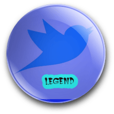

Badge
Congratulations!
Profile Summary

Name- Jack----News
Date of Recent Tweet- Jack
Date of Joining Twitter- Jack
Followers- Jack
Likes- Jack
Jack has tweeted mostly on the topic News. However,Jack has also shown interest in tweeting about Arts,Technology and Sciences.
Sentiment Analysis
Positive Person
Neutral Person
Negative Person
Top Tweets Catagorywise!
Sports
Welcome, Mudge! https://t.co/hl9HiRjGtg
— jack (@jack) November 16, 2020
Arts
— jack (@jack) November 19, 2020
Home and Domestic Life
If we ask you to stay home we should also send you money so you can can do so.
— Andrew Yang🧢🇺🇸 (@AndrewYang) November 19, 2020
Computer and Technology
1/ Patent trolls are a massive threat to innovation.
— Jerry Brito 🇫🇷 (@jerrybrito) October 28, 2020
Every crypto firm and project should join the Crypto Open Patent Alliance -- for themselves and for the ecosystem. https://t.co/mTVHxe2kJN
Health
#EndSARS because people deserve to sleep in peace.
— ST. (@seyitaylor) October 16, 2020
Science
And @_KarenHao just reported on a radical new technique to train AI models. It’s called “less than one”-shot learning (and yes, that’s a mythical rhinocorn) #EmTechMIT #TechReviewEvents https://t.co/5KPhlMdebE
— MIT Technology Review (@techreview) October 20, 2020
Recreation and Activities
Join @CashApp! #Bitcoin https://t.co/SbYANIZyix
— jack (@jack) November 18, 2020
Business and Economics
Today @twitter is investing $100 million from our balance sheet in Black, Latinx and other underserved communities in the US, and we made it easy for other companies to do the same. Here’s how we did it - send this to the CFO and Treasurer at your company so you can join us!
— Ned Segal (@nedsegal) November 12, 2020
News
Thank you members of the Judiciary Committee for the opportunity to speak with the American people about Twitter and your concerns around censorship and suppression of a specific news article, and generally what we saw in the 2020 US Elections conversation.
— jack (@jack) November 17, 2020